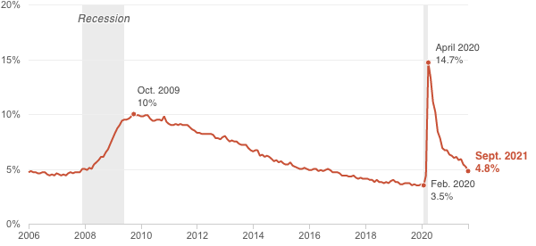

<%= await t.include("./partials/_header.html", { "slug": slug, "config": config, "id": "historic_unemployment" }) %>
<%= t.smarty(COPY.labels.headline_historic_unemployment) %>
<% if (COPY.labels.subhed_historic_unemployment) { %>
<%= t.smarty(COPY.labels.subhed_historic_unemployment) %>
<% } %>

<% if (COPY.labels.footnote_historic_unemployment) { %>
<% } %>
<%= await t.include("./partials/_footer.html") %>